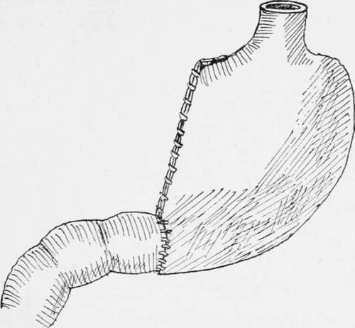
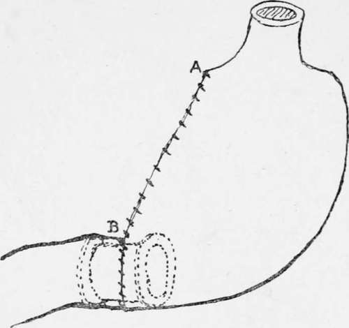

Partial Gastrectomy Of The Pyloric End Of The Stomach
Description
This section is from the book "Cancer Of The Stomach", by A. W. Mayo Robson, D.Sc, F.R.C.S.. Also available from Amazon: Cancer of the Stomach.
Partial Gastrectomy Of The Pyloric End Of The Stomach
I have not used the term " pylorectomy," as the simple removal of the pylorus is only justifiable in non-malignant disease, such as chronic ulcer. Whenever the disease is thought to be malignant a more extensive operation must be done, involving a partial excision of the stomach itself, including the pylorus if that be diseased.
If the exploratory operation previously described has shown the tumour to be a removable one, involving the pyloric end of the stomach, the incision is extended up to the notch between the ensiform cartilage and the right costal margin and down to the level of the umbilicus or beyond it.
It will now afford some help if a small sandbag be placed under the back opposite the lower ribs, as in that way the area of operation is brought close to the surface ; or better still, a mechanically-operated table will accomplish the same purpose in a moment; the one I employ is known as the Guyot-Greville table.
The lesser omentum is divided between two rows of interrupted catgut sutures applied by means of a curved blunt needle in handle, the ligament being divided at a distance from the lesser curvature of the stomach so as to include the glands in the part to be removed.
In order to save haemorrhage, there is an advantage, quite early in the operation, in ligaturing in their continuity, or catching in pressure forceps the four arteries with their accompanying veins supplying the pyloric end of the stomach; these are the gastric, best divided at a point about 3/4 to 1 in. below the cardiac orifice where it joins the lesser curvature ; the pyloric, just above the pylorus, shortly after it leaves the hepatic artery; the right gastro-epiploic or gastro-duodenal, as it passes down behind the pylorus; and the left gastro-epiploic, just below the greater curvature of the stomach at the point where the section of the stomach is to be made. An aneurysm needle carrying a double catgut suture is the method I prefer, and the artery and vein are taken up together and divided between the double ligatures.
It saves time and answers equally well to seize the four vascular trunks in pressure forceps, and when the excision of the stomach is done to ligature them singly.
The fingers of the left hand are then passed into the lesser peritoneal sac and made to encircle the growth and to cause the great omentum to project forward, thus avoiding the transverse colic vessels, the ligature of which would endanger the vitality of the transverse colon. The great omentum is then ligatured off and divided in the same way as the lesser, as wide a margin of omentum as possible being left attached to the part of the stomach to be removed.
Double clamps are then applied to the duodenum and also to the stomach on the cardiac side of the growth, and between the clamps the duodenum is divided quite half an inch on the distal side of the growth and the stomach an inch or more beyond the proximal side of it. The growth, which is then free, is lifted away, the clamps occluding the cut ends and preventing any of the contents soiling the wound.
A careful search must now be made for any glands that may have been missed and any such should be removed. Any bleeding vessels are ligatured and the wound is cleansed by dry aseptic swabs.
The junction of the stomach and duodenum may be carried out in one of several ways :
(1) By immediate suture of the open end of the duodenum to the open end of the stomach (Billroth) (terminal union).
(2) By closure of the stomach opening and implantation of the open end of the duodenum into the posterior surface of the stomach (Kocher) (termino-lateral union).
(3) By closure of both the stomach and duodenal openings and the independent formation of a gastrojejunostomy (Billroth) (lateral union).
(1) By Immediate Suture Of The Cut Ends
This method was advocated by Mikulicz and Kronlein. Although statistics seem to prove that it is attended with greater risks than the other methods on account of the fear of leakage at the critical angle between the vertical and circular sutures, I feel sure these difficulties and dangers can be overcome by the use of a continuous suture over a decalcified bone bobbin.
Fig. 6.-Partial gastrectomy; end-to-end junction.
I have carried out the operation in a number of cases that have progressed most satisfactorily. The inequality in the size of the stomach opening is overcome by a partial closure of the stomach incision so as to leave the gastric opening of a size equal to that in the duodenum. The two openings may then be joined either by means of sutures or by sutures around a decalcified bone bobbin, which forms a splint and ensures the opening being made of sufficient size. The bobbin is of the greatest possible advantage in this situation, as a large proportion of deaths that have occurred from simple suture have been due to a leakage at what has been termed "the fatal suture angle of Billroth"-a danger which can be wholly avoided by its use.
Fig. 7.-Partial gastrectomy ; end-to-end junction by means of the decalcified bone bobbin as a splint over which to apply the sutures.
Mr. Rutherford Morrison advocates the junction by simple suture, and in order to make the opening in the duodenum correspond in size with that in the stomach he makes a slit half an inch in length down the centre of the anterior wall of the duodenum. By spreading out this longitudinal cut the duodenal opening is so widened that it may be made to correspond in size with the stomach opening.
The method of joining the cut ends by suture is the same whether the decalcified bone bobbin is employed or not; the only difference is that at a certain stage the bobbin is introduced before the sutures are continued around the anterior half of the circle.
Continue to:
- prev: Chapter IX. Gastrectomy
- Table of Contents
- next: Partial Gastrectomy Of The Pyloric End Of The Stomach. Part 2
Tags
stomach, operation, cancer, tumour, ulcer, gastric, gastrectomy